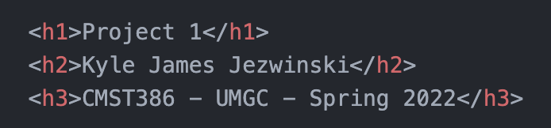

Project 1
Kyle James Jezwinski
CMST386 - UMGC - Spring 2022

What is a search engine?
Imagine, a finely-tuned, computer-crafted machine that automatically identifies, catalogs, and serves all forms of digital media throughout the entirety of the known internet.
~
All of the videos, music, photos, articles, books, and more all need to be retrievable upon any relevant query. It's an engine used for searching.

Why is using keywords and descriptions as meta tags important?
Search engines find relevant words to connect back to interested people by analyzing the content of any webpage, including the metadata. Websites store these important details for search engines and other indexing algorithms by scraping all kinds of data. The data declared using the "meta" tag can increase visibility and search ranking relevance of a website.
~
On a personal note, I'm the Creative Director for a YouTube channel that is nearing the 50,000 subscriber milestone. My success at that role has been greatly emboldended by my increasing understanding of keywords and descriptions. Remember, the description is where all those affiliate links are too!

What are the four elements that comprise writing relevant content links?
A relevant perspective to express the four elements by
Jessica Lynnebrings freshness to the story-first approach heradled by the world's most legendary marketers. The first proclaimed is the "Headline — That big piece of text." That, of course, brings to mind the roots of traditional forms of media, such as print newspapers, even telegrams, that carry the end of the story at the front. Second is about writing a great lead, which carries from the initial hook of interest through the deliverable call-to-action-enticing narrative. Never to be mistreated, arbitrarily listed at the third spot, "The Body", which I decided to capitalize in this context. Let's jump over the fourth, cherry-on-top, and properly assumed to be, "The Close", and move back to, a little closer this time around, the aforementioned "body". It's the part that touches the audience, the listener, and the artist. It's the stories we hold dear and translate into creative works of art, that then capture eyeballs and sometimes get segmentened into all sorts of capitalized media exploits. I truly love all of that; hook, line, and sinker. Click the link! Ironically, the stylesheet for this project poured a heavy batch when designing the LINK BUTTONS.

What constitutes good heading hierarchy?
A service-disabled US Army Veteran could certainly explain the importance of heeding to the hierarchy. Heading hierarchy? Lowly enough, were not heading to the higher country. Heading hierarchy? These winds won't whisper anymore, even you close the door and decide not to listen. It will still happen. There is a head, a top, a center, a focal point; and from that zenith of excellence, or, at the least, some sort of eye-leading importance, begins to unfold in the following headings, as does the privates and the generals, reinforcing talking points, directions to further research and development, access to understand and become a more active part of the story. It's also ABC-123-DoReMi easy-peasy. Check out the, check check, look at this code sauce sprinkled atop each slice on this map, shall I say, domain?
It's good, right?